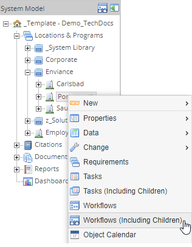
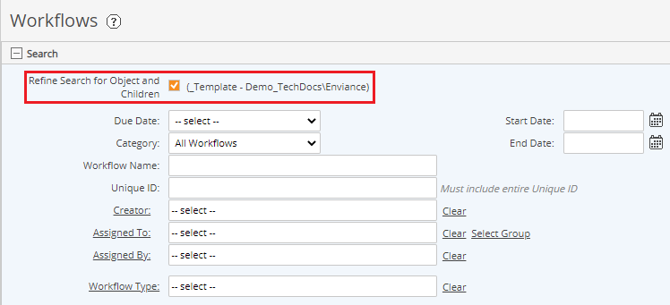

You can search for workflows related to a system object (tree object or applicable requirement) from the System Model page.
To view workflows for a specific object:
In the System Model page, right click the desired object in the system tree and select one of the following:
Workflows: View only workflows associated only with this object.
Workflows (Including Children): View workflows associated with this object and any child object (including both system model objects and requirements).

Use the search criteria to further filter the results. See Search Workflows.
You must have permission on the object to view associated workflows. Any permission on the object is sufficient.

To remove the filter:
Uncheck the box Refine Search for ... at the top of the search pane, then click Search.
Or, click Clear to remove all search criteria.
To save the search:
Enter a name for the search. Then link Save.
You can access your saved search in future from the Custom Searches panel on your Desktop, or other dashboard.